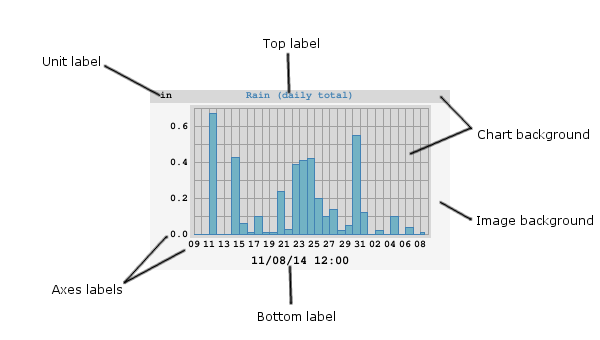

[ImageGenerator]¶
This section describes the various options available to the image generator.
|  |
|---|
| Part names in a WeeWX image |
General options¶
These are options that affect the overall image.
anti_alias¶
Setting to 2 or more might give a sharper image, with fewer jagged
edges. Experimentation is in order. Default is 1.
 |
|---|
| A GIF showing the same image with anti_alias=1, 2, and 4. |
chart_background_color¶
The background color of the chart itself. Optional. Default is
#d8d8d8.
chart_gridline_color¶
The color of the chart grid lines. Optional. Default is #a0a0a0
 |
|---|
| Example of day/night bands in a one week image |
daynight_day_color¶
The color to be used for the daylight band. Optional. Default is
#ffffff.
daynight_edge_color¶
The color to be used in the transition zone between night and day.
Optional. Default is #efefef, a mid-gray.
daynight_night_color¶
The color to be used for the nighttime band. Optional. Default is
#f0f0f0, a dark gray.
image_background_color¶
The background color of the whole image. Optional. Default is
#f5f5f5 ("SmokeGray")
image_width¶
image_height¶
The width and height of the image in pixels. Optional. Default is 300 x 180 pixels.
show_daynight¶
Set to true to show day/night bands in an image. Otherwise, set
to false. This only looks good with day or week plots. Optional. Default
is false.
skip_if_empty¶
If set to true, then skip the generation of the image if all
data in it are null. If set to a time period, such as month or
year, then skip the generation of the image if all data in that
period are null. Default is false.
stale_age¶
Image file staleness age, in seconds. If the image file is older than
this age it will be generated. If no stale_age is specified,
then the image file will be generated every time the generator runs.
unit¶
Normally, the unit used in a plot is set by whatever unit group the types are in. However, this option allows overriding the unit used in a specific plot.
Label options¶
These are options for the various labels used in the image.
axis_label_font_color¶
The color of the x- and y-axis label font. Optional. Default is
black.
axis_label_font_path¶
The path to the font to be used for the x- and y-axis labels. Optional. If not given, or if WeeWX cannot find the font, then the default PIL font will be used.
axis_label_font_size¶
The size of the x- and y-axis labels in pixels. Optional. The default is
10.
bottom_label_font_color¶
The color of the bottom label font. Optional. Default is black.
bottom_label_font_path¶
The path to the font to be used for the bottom label. Optional. If not given, or if WeeWX cannot find the font, then the default PIL font will be used.
bottom_label_font_size¶
The size of the bottom label in pixels. Optional. The default is
10.
bottom_label_format¶
The format to be used for the bottom label. It should be a strftime
format.
Optional. Default is '%m/%d/%y %H:%M'.
bottom_label_offset¶
The margin of the bottom label from the bottom of the plot. Default is 3.
top_label_font_path¶
The path to the font to be used for the top label. Optional. If not given, or if WeeWX cannot find the font, then the default PIL font will be used.
top_label_font_size¶
The size of the top label in pixels. Optional. The default is
10.
unit_label_font_color¶
The color of the unit label font. Optional. Default is black.
unit_label_font_path¶
The path to the font to be used for the unit label. Optional. If not given, or if WeeWX cannot find the font, then the default PIL font will be used.
unit_label_font_size¶
The size of the unit label in pixels. Optional. The default is
10.
x_interval¶
The time interval in seconds between x-axis tick marks. Optional. If not given, a suitable default will be chosen.
x_label_format¶
The format to be used for the time labels on the x-axis. It should be a strftime format. Optional. If not given, a sensible format will be chosen automatically.
x_label_spacing¶
Specifies the ordinal increment between labels on the x-axis: For
example, 3 means a label every 3rd tick mark. Optional. The default is
2.
y_label_side¶
Specifies if the y-axis labels should be on the left, right, or both
sides of the graph. Valid values are left, right or both. Optional.
Default is left.
y_label_spacing¶
Specifies the ordinal increment between labels on the y-axis: For
example, 3 means a label every 3rd tick mark. Optional. The default is
2.
y_nticks¶
The nominal number of ticks along the y-axis. The default is
10.
Plot scaling options¶
time_length¶
The nominal length of the time period to be covered in seconds. Alternatively,
a duration notation can be used. The exact length of the
x-axis is chosen by the plotting engine to cover this period. Optional.
Default is 86400 (one day).
yscale¶
A 3-way tuple (ylow, yhigh, min_interval), where ylow and yhigh are
the minimum and maximum y-axis values, respectively, and min_interval is the
minimum tick interval. If set to None, the corresponding value will be
automatically chosen. Optional. Default is None, None, None. (Choose the
y-axis minimum, maximum, and minimum increment automatically.)
Compass rose options¶
 |
|---|
| Example of a vector plot with a compass rose in the lower-left |
rose_label¶
The label to be used in the compass rose to indicate due North.
Optional. Default is N.
rose_label_font_path¶
The path to the font to be used for the rose label (the letter "N," indicating North). Optional. If not given, or if WeeWX cannot find the font, then the default PIL font will be used.
rose_label_font_size¶
The size of the compass rose label in pixels. Optional. The default is
10.
rose_label_font_color¶
The color of the compass rose label. Optional. Default is the same color as the rose itself.
vector_rotate¶
Causes the vectors to be rotated by this many degrees. Positive is
clockwise. If westerly winds dominate at your location (as they do at
mine), then you may want to specify +90 for this option. This
will cause the average vector to point straight up, rather than lie flat
against the x-axis. Optional. The default is 0.
Plot line options¶
These are options shared by all the plot lines.
chart_line_colors¶
Each chart line is drawn in a different color. This option is a list of
those colors. If the number of lines exceeds the length of the list,
then the colors wrap around to the beginning of the list. Optional. In
the case of bar charts, this is the color of the outline of the bar.
Default is #0000ff, #00ff00, #ff0000.
Individual line color can be overridden by using option color.
chart_fill_colors¶
A list of the color to be used as the fill of the bar charts. Optional.
The default is to use the same color as the outline color (option
chart_line_colors).
chart_line_width¶
Each chart line can be drawn using a different line width. This option
is a list of these widths. If the number of lines exceeds the length of
the list, then the widths wrap around to the beginning of the list.
Optional. Default is 1, 1, 1.
Individual line widths can be overridden by using option width.
Individual line options¶
These are options that are set for individual lines.
aggregate_interval¶
The time period over which the data should be aggregated, in seconds.
Alternatively, a duration notation can be used.
Required if aggregate_type has been set.
aggregate_type¶
The default is to plot every data point, but this is probably not a good
idea for any plot longer than a day. By setting this option, you can
aggregate data by a set time interval. Available aggregation types
include avg, count, cumulative, diff, last, max, min, sum,
and tderiv.
color¶
This option is to override the color for an individual line. Optional.
Default is to use the color in chart_line_colors.
data_type¶
The SQL data type to be used for this plot line. For more information, see the section Including a type more than once in a plot. Optional. The default is to use the section name.
fill_color¶
This option is to override the fill color for a bar chart. Optional.
Default is to use the color in chart_fill_colors.
label¶
The label to be used for this plot line in the top label. Optional. The default is to use the SQL variable name.
line_gap_fraction¶
If there is a gap between data points bigger than this fractional amount of the x-axis, then a gap will be drawn, rather than a connecting line. See Section Line gaps. Optional. The default is to always draw the line.
line_type¶
The type of line to be used. Choices are solid or
none. Optional. Default is solid.
marker_size¶
The size of the marker. Optional. Default is 8.
marker_type¶
The type of marker to be used to mark each data point. Choices are
cross, x, circle, box, or none. Optional. Default is none.
plot_type¶
The type of plot for this line. Choices are line, bar,
or vector. Optional. Default is line.
width¶
This option is to override the line width for an individual line.
Optional. Default is to use the width in chart_line_width.